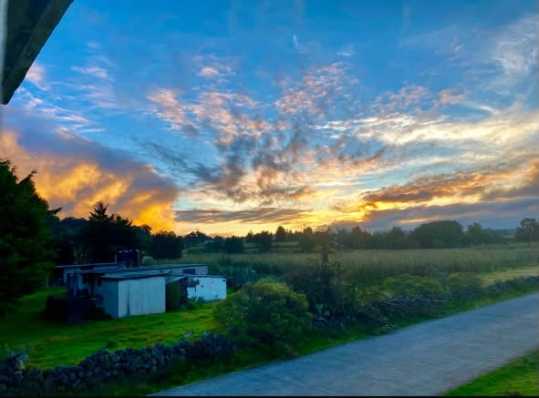
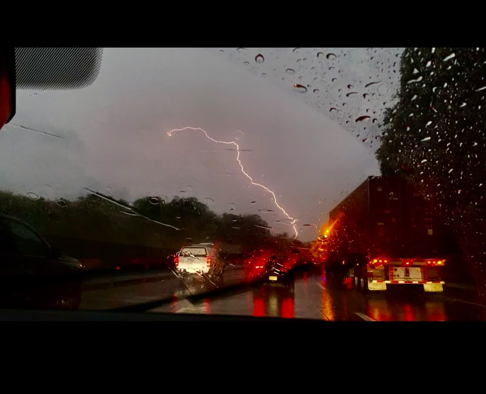

Memorables
Momentos que decidí querer recordar.

El cielo se incendió
"Sentir una pausa a traves de el cielo"

Gotas en el cristal
"Pausa obligatoria."
Cambio de estación
"Todo se transforma."
Entre páginas
"Un refugio entre papel y tinta."